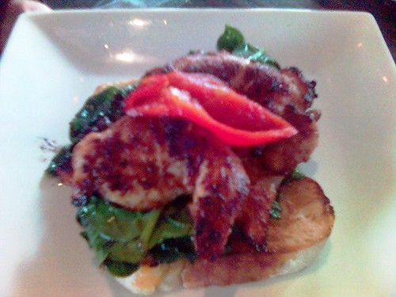

Honey Mustard Chicken
Makes 4 servings

Photo: avlxyz (CC BY-SA 2.0)
Directions
- Stir salad dressing, mustard and honey. Place chicken on grill or rack of broiler pan. Brush with 1/2 os sauce. Grill or broil for 8 to 10 minutes, turn and brush remaining sauce. Continue grilling or broiling 8 to 10 minutes or until tender. Makes 4 servings.
- Stir salad dressing, mustard and honey. Place chicken on grill or rack of broiler pan. Brush with 1/2 os sauce. Grill or broil for 8 to 10 minutes, turn and brush remaining sauce. Continue grilling or broiling 8 to 10 minutes or until tender. Makes 4 servings.
https://baron-3dl.github.io/normans-kitchen/recipe/honey-mustard-chicken.html